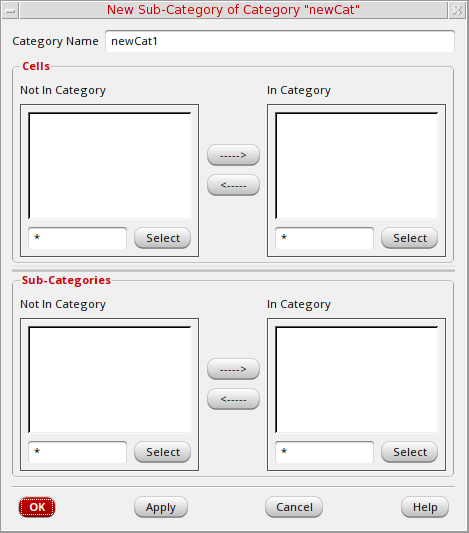

Creating a Subcategory in an Existing Category
To create a new subcategory in an existing category, follow these steps:
- Select the category for which you want to create a subcategory.
-
Choose Edit – Categories – New Sub-Category .
The New Sub-Category form appears. - In the Category Name field, type the name of the new subcategory.
- In the Cells group box, in the Not In Category list box, select the cells you want to include in this subcategory.
- Click the right arrow to move them to the In Category list box.
- Click OK.
The New Sub-Category form closes. The Library Manager creates a subcategory in the selected category.
Related Topics
Controlling the Display of Library Information
Return to top